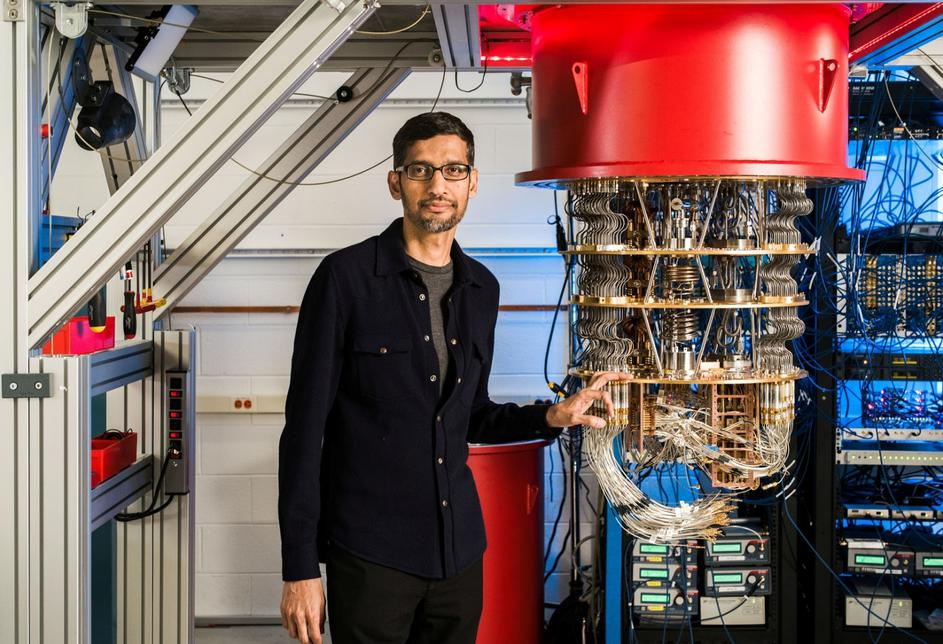

NOVOSTI
Ljudima prijeti opasnost od opće umjetne inteligencije
Umjetna inteligencija promijenit će svijet u jednom trenutku, ali ono od čega se strahuje jest opća umjetna inteligencija ili AGI (artificial general intelligence), za koju stručnjaci smatraju da će preuzeti kontrolu nad svijetom te izbrisati potrebu za ljudskom intervencijom. More ...

Googleovo kvantno računalo za 200 sekundi učinilo nemoguće
Google je objavio da je ostvario "kvantnu nadmoć" svojim kvantnim računalom koje je u nekoliko minuta riješilo složeni problem za koji bi današnjim najsnažnijim superračunalima trebale tisuće godina, prenose agencije o studiji objavljenoj u srijedu. More ...

Microsoft skratio radni tjedan, produktivnost skočila 40 posto
Navodi se kako je skoku u produktivnosti pomogla činjenica da su radnici morali biti ekonomični i učinkoviti sa svojim vremenom. Odnosno, mnogi su sastanci skraćeni ili su ih obavili na daljinu More ...